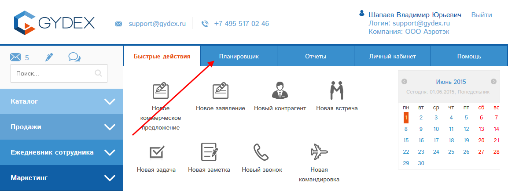

Раздел "Планировщик" предназначен для управления рабочим временем сотрудников. Доступно планирование следующих видов деятельности:
Вход в раздел "Планировщик" доступен из любого раздела программы, для этого нужно кликать по кнопке "Планировщик" под шапкой сайта:

Рис. Переход в раздел "Планировщик".
Откроется окно планировщика:
Рис. Общий вид окна планировщика.
Окно состоит из следующих блоков:
1 - Кнопка "Создать событие" - служит для создания новой записи планировщика.
2 - Список событий - реестр доступных Вам событий, разбитый на вкладки по виду события.
3,4 - взаимосвязанные блоки "Календарь" и "График на день". По умолчанию выбрана сегодняшняя дата, и показан график событий на текущую дату. При клике по другой дате в календаре (3) будет показан график на выбранную дату в блоке (4).
При клике по пустому пространству в графике будет начато создание события планировщика в выбранный день на то время, где был произведен клик по графику.
Если кликнуть на событие в графике, то откроется карта этого события.

Рис. Кнопки создания события планировщика.
Для удобства работы Вы можете создать событие планировщика прямо со страницы "Быстрые действия". Используйте кнопки 1-5 для создания события требуемого вида (встреча, задача, заметка, звонок, командировка).
На странице "Быстрые действия" (стартовая страница программы) доступен блок "Действия пользователя". Он показывает Ваши действия из планировщика по выбранным параметрам. По умолчанию показаны все Ваши действия на сегодня:
Рис. Блок "Действия пользователя".
Т.к. в нашем примере на сегодня у тестового сотрудника действий нет, то список в блоке (1) пуст.
Команда "Добавить новое" (6) позволяет создать новое событие планировщика.
Доступны следующие фильтры:
После выбора требуемых параметров нужно нажать кнопку "Показать" (5).
Выберем действия за определенный период. Блок примет вид:
Рис. Блок "Действия пользователя": выбраны значения фильтров.
Нажав кнопку , Вы можете перейти в карту действия.